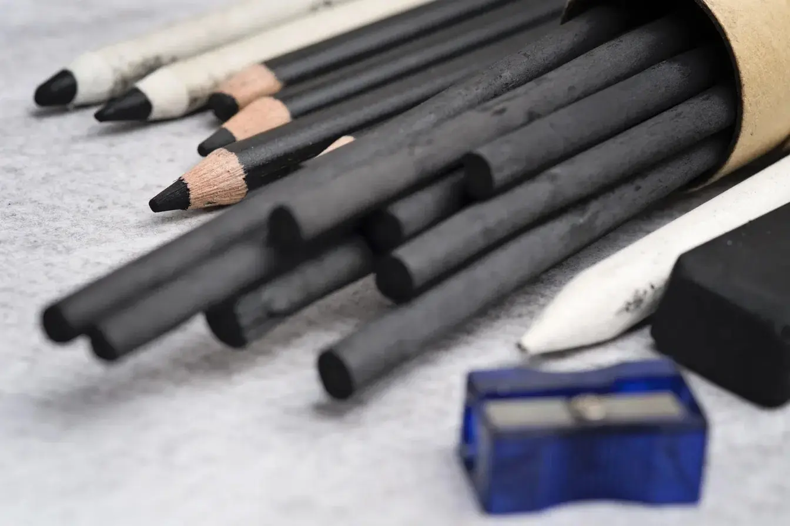

About
Drawing has been a passion of mine for many years. Through graphite and charcoal, I enjoy capturing emotions, textures, and the small details that make each subject unique. Every drawing is an opportunity to improve my technique while expressing my appreciation for traditional art.
This website is a collection of my work and my artistic journey. I hope you enjoy exploring my drawings as much as I enjoy creating them.

Graphite and Charcoal
This quote from Odilon Redon, a true master of charcoal drawing, resonates deeply with my approach. In my practice, I have naturally developed the habit of combining two simple yet highly complementary tools: graphite pencil and charcoal pencil. It is a balance I really enjoy exploring on paper.
Graphite offers me the softness and precision needed to build my subject and work on the delicacy of a line. Charcoal, on the other hand, allows me to reach for much deeper, velvety blacks. Playing with these two materials helps me give depth to the atmosphere and accentuate the shadows. It is an almost tactile process, where I simply try to highlight my subject through the rich, natural contrasts of these two tools, while keeping the authentic joy of traditional drawing.
From Sketch to Finished Drawing
Every portrait begins with a simple construction sketch and gradually evolves through layers of shading, refinement, and detail until the final artwork emerges.